12.

>I want money please!!
>Just leave it to me!!
>dorororo (slot rolling sounds)
>I hit (the jackpot)!!?
>FUOOOOOH!
>A young girl! Black T-back [lingerie type]
>Wow, it's a true young girl body type....hurray for the good things
>You should be gentle...?
>Mushoku Tensei EP 12 impressions (a lot of halluncinations included)
>FUOOOOOOH!
>Eris-san's so cool!! (and onomatopeia for nakedness)
>Rudy!! let's go swimming!! - Eris who can undress without a second thought
>Ruijerd-san who crosses the sea by running on it is so cool!!
>It's been an year, isn't it (wriggle, wriggle)
>Isn't it like half an year? [meta joke about the gap between the cours]
13.
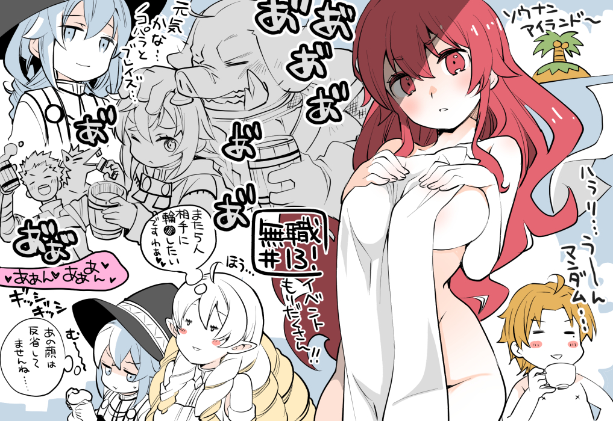
>Shipwrecked island~
>Gently.....hmm, suncreen....
>Mushoku #13 - chockfull of events!!
>I wonder if they are doing fine....Nokopara and Braize....
>I want to have a consecutive sex with 5 people, don't you ~
>That's not a regretting face is it...
14.
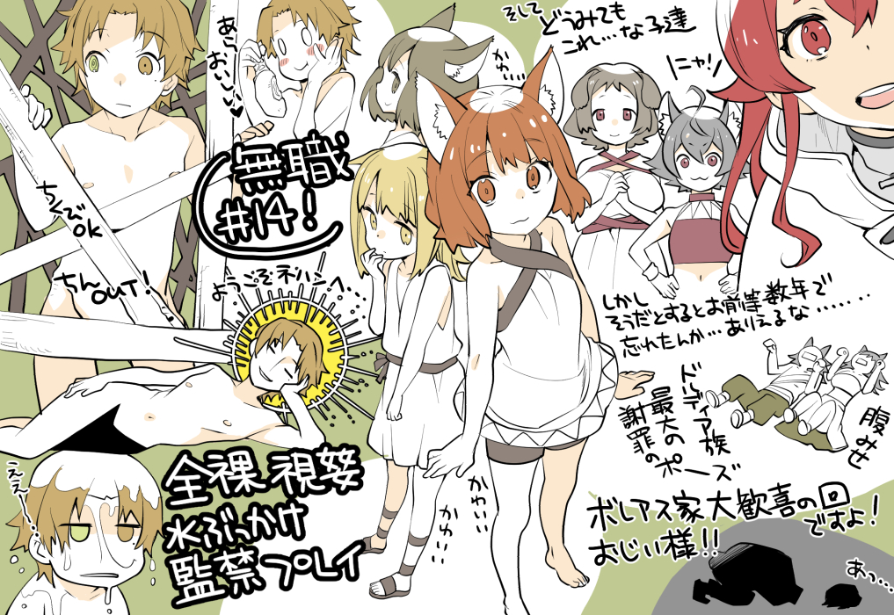
>Cute cute cute
>And however you may look at it....these children(undescribable feeling)
>But if it is like that did you people forget in just a few years... that's possible... [no idea what he is talking about here]
>Showing belly - Doldia's greatest pose for apology
>An episode of great delight for the Boreas family! Ojii-sama!! Ah...
>Ara, Oishii ~
>Welocme to Nirvana...
>Nipple's a ok, wiener's an out!
>Completely naked, public exhibition, Water bukkake, confinement play
15.
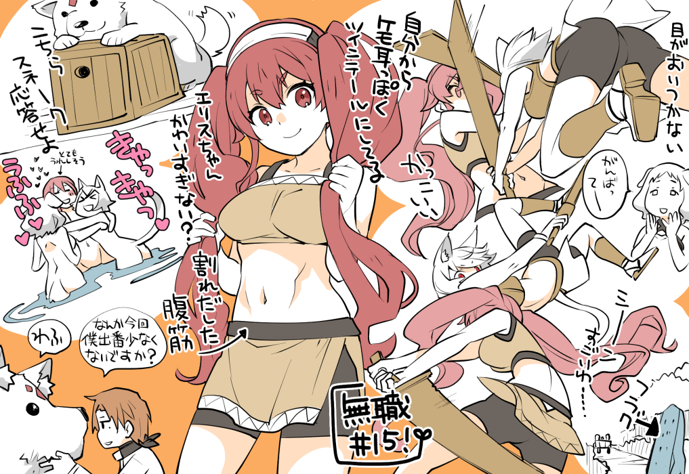
>Ganbatte~[Dog girl's text box]
>Her eyes can't follow
>(pointing at the great powers waymarker)flag
>Making twintails by herself, to look like beast ears
>Isn't eris-chan too cute?
>Delienated abs
>This is snake, respond
>(kyaa, kyaa ufufu)seems very happy
>Somehow, it seems like I have too few appearances this time, isn't it?
>wafu(dog sounds)
16.
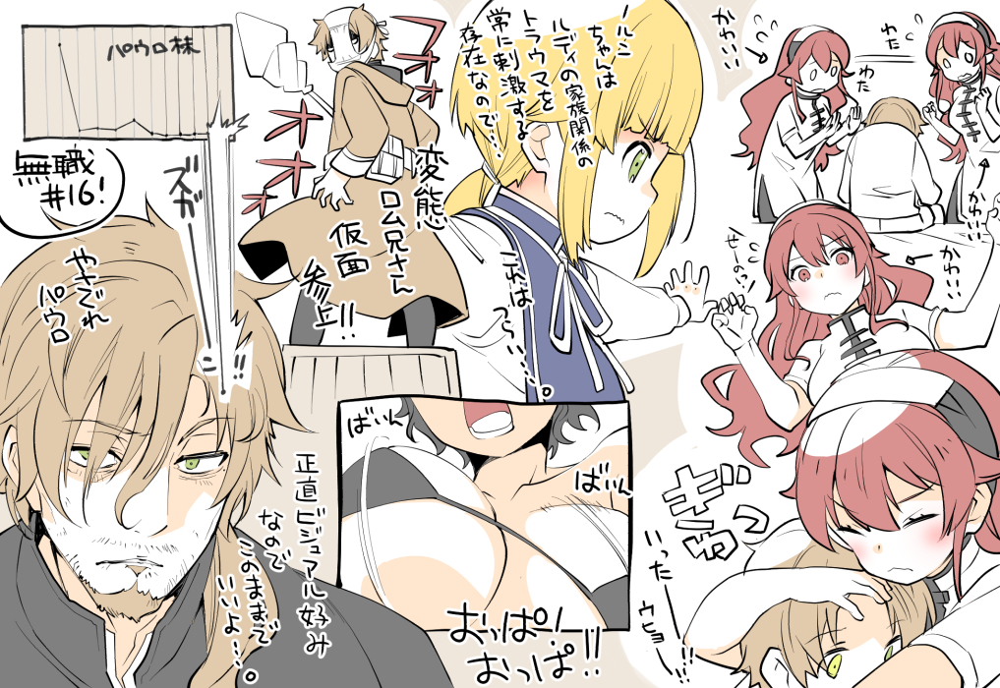
>flustered eris
>Norn is someone that stimulates Rudy's family related trauma, so... this is painful...
>Pervert Rom-nee san is here!! [Referring to machine robo's protag rom stol and his justice boner]
>Paul's share value
>Apathetic paul
>Frankly, this appearance is nice so it's fine if he stays the same...
17.
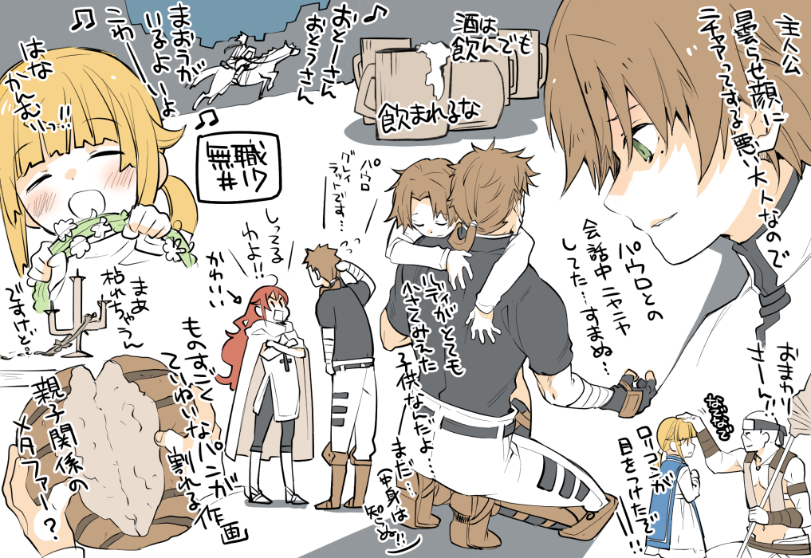
>Because I am an adult that smirks at protag's cloudy face
>I was smiling all the way through the conversation with paul...sorry...
>Police officer!!
>Lolicon got his eyes on someone!!
>It's too much to bear even if you are drunken [author is playing a pun here]
>Rudy looked so small. He is stilla child... (I no nothing about the inside!!)
>~Father, Father, there's a demon here, it's scary~ [referring to Erlkönig]
>I am paul greyrat...
>I know!! (cute)
>Flower wreath!! Well it's going to wither anyway..
>Extremely detailed sakuga for breaking bread
>A metaphor for parent-child relation?
18.
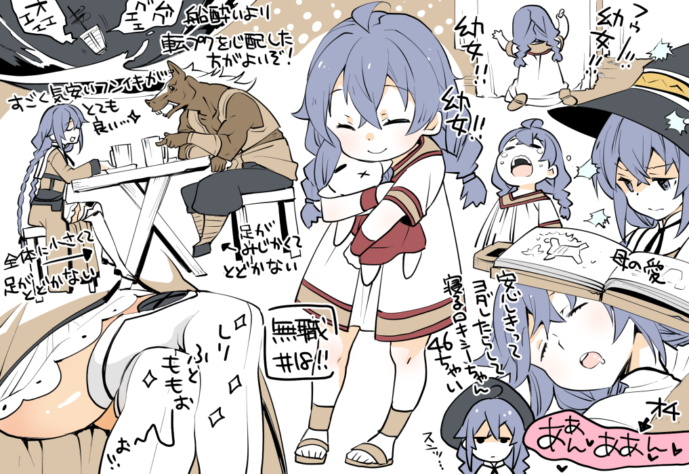
>Fuoooh!! little girl!! little girl!! little girl!!
>[on the book]Mother's love
>Completely relaxed and drooling, sleeping Roxy-chan. 46 yearch old [years in child voice]
>(Vomiting sounds)It's better to worry about going overboard than worrying about seasickness!
>This very relaxed mood is very nice
>Can't reach the floor because the legs are too small [pointing Nokopara]
>Can't reach the floor because the body as a whole is too small [Roxy]
>Butt, thighs Oooooooh!!
19.
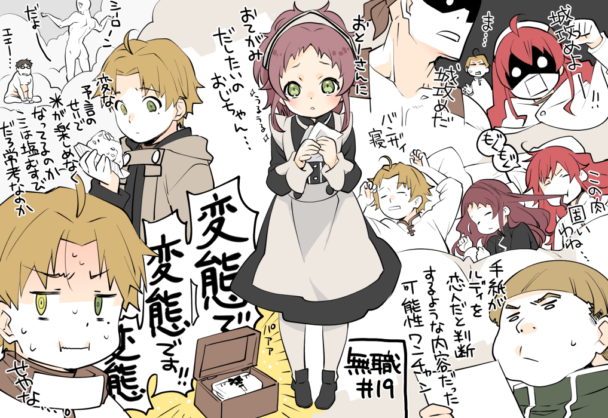
>Let's storm the castle!! [Eris]
>Well... [Rudy]
>Storming the castle it is [Ruijerd]
>(mogu, mogu) This meat's too tough
>Banzai sleep [Rudy]
>Maybe there's a chance that letter's contents are such that they make someone believe rudy to be a lover?
>Uncle, I want to get a letter to daddy (teary-eyed)
>It's Shiron~
>ehhh....
>Is it because of the wierd prophecy that he can't enjoy the rice or the realisation that the salted rice is the common fare here?
>A pervert!! A pervert!! A pervert!!
>That's right...
20.
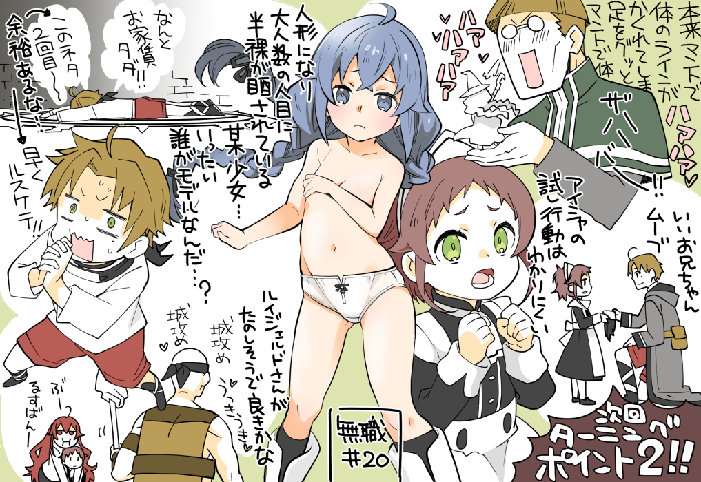
>Originally the body line's are covered by the cloak...the leg pulling it....body by cloak (onomatopeia for getting too into it)
>Zanoba!!!
>Acting like a good brother
>Aisha's act to test Rudy is a bit hard to understand
>Next Episode Turning point 2!!
>The girl who exposes her half naked body to numerous eyes by becoming a doll...
>Who is the model...?
>You see, the rent's free!! The second time using the same joke...
>Not in a serious pinch is he (pointing to the above line and the below)
>Quick, Rusukete (Ruijerd+Tasukete/Ruijerd, help me)
>(Castle attack, castle attack)(in high spirits) Maybe it's good that Ruijerd-san is having fun
>ugh..., staying home...
21.
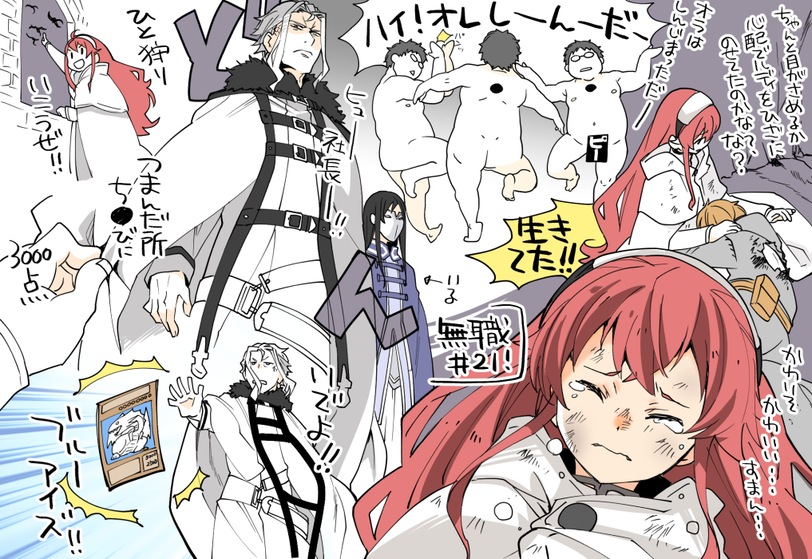
>She probably placed rudy on her lap worrying whether he is going to open his eyes or not?Right?
>Pitiable cuteness [being cute because she is pitiful]... sorry...
>I am de-----ad
>HAI! I~ AM~ DEAD~ [Rudy singing]
>But he lived!
>is here [nanhoshi]
>Ooooh , President!!
>Come into existence!! Blue eyes!! [Yugioh reference]
>(if) a nipple's where she pinched - 3000 points
>Let's go and hunt one!!
22.
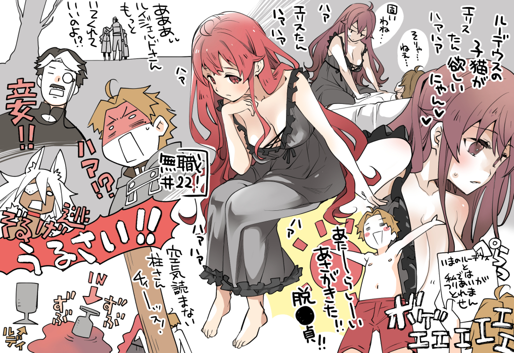
>Eris-tan wants Rudeus's kittens hhaaaaah nya~n
>It's heard isn't it [Eris speaking]
>Well...that's....
>I am not balanced with rudy as he is now (Rudy dying noises)
>A new dawn's here!! Graduation from virginity!!
>aaaa~ it's fine if you stay longer Ruijerd-san!?
>Concubine!!
>HAA!?
>Let's run away!
>SHUT UP!!
>Pillar-san can't read the modd in the room, ptch!
>Cup<-Rudy('s chinchin)
23.
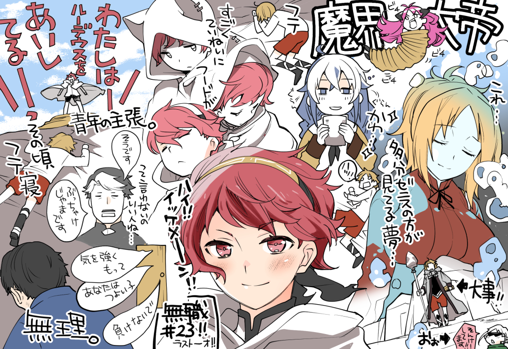
>This...is probably something Zenis is dreaming up... [the ep?]
>(pointing at the panty box) Precious
>Hood is extremely detailed [referring to animation]
>hai!! handso~me guy!! [ikemen]
>I LOVE RUDEUS!! (Insistence of a teenager)
>Rudeus sleeping face down about that time
>Yes you are right
>Frankly you are a nuisance (a good guy who won't say this outright)
>Stay strong
>You are a strong child
>Don't lose
>IMPOSSIBLE.